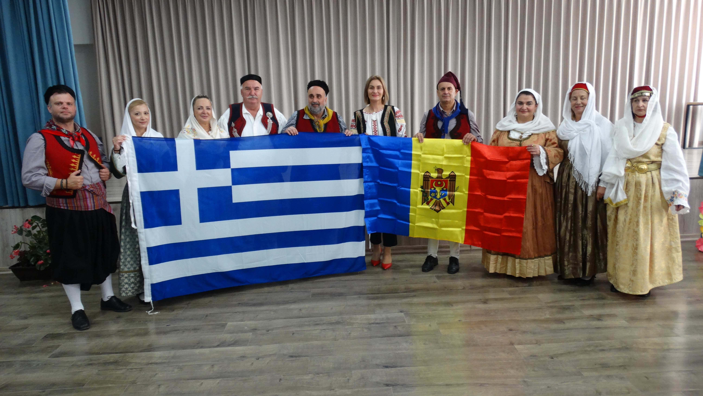

Νέα ενότητα
Οι επόμενες δράσεις μας θα αναρτώνται εδώ.
Η σελίδα είναι σχεδιασμένη ώστε ο Σύλλογος να μπορεί εύκολα να παρουσιάζει τις επόμενες εκδηλώσεις, παραστάσεις και ανακοινώσεις του.
Δείτε τη διαδρομή μαςΈνας ζωντανός πολιτιστικός και μορφωτικός σύλλογος που υπηρετεί την παράδοση, την τέχνη και τη συλλογική δημιουργία από το 2015.
Ο Πολιτιστικός και Μορφωτικός Σύλλογος Ιερής Πόλης Μεσολογγίου «Ελεύθεροι Πολιορκημένοι» ιδρύθηκε τον Οκτώβριο του 2015 από μια ομάδα φίλων ενεργών στα πολιτιστικά δρώμενα της πόλης.
Με περίπου 150 μέλη και ένα σύνολο διαφορετικών τμημάτων, ο σύλλογος αποτελεί χώρο συνάντησης, έκφρασης, μάθησης και πολιτιστικής δράσης.
«Ελεύθεροι Πολιορκημένοι» — ένα όνομα με ιδιαίτερη σημασία και ιερότητα για το Μεσολόγγι και την ελληνική ιστορία.
Περισσότερα για εμάς
Από τον ελληνικό παραδοσιακό χορό και το σύγχρονο χορό έως το θέατρο, τη φωτογραφία, τα εικαστικά και τη γυμναστική γυναικών.
Το τμήμα που ξεκίνησε μαζί με τον σύλλογο, με έντονη παρουσία σε φεστιβάλ και πολιτιστικές εκδηλώσεις στην Ελλάδα και το εξωτερικό.
Τμήμα σύγχρονου χορού με υπεύθυνη τη Μαρία Κέλλη.
Παραστάσεις, θεατρική δημιουργία και συμμετοχή σε πολιτιστικές διοργανώσεις.
Τμήμα φωτογραφίας με υπεύθυνο τον φωτογράφο Νίκο Σιάμο.
Εικαστική έκφραση με υπεύθυνο τον Νίκο Ντούμα, απόφοιτο της Σχολής Καλών Τεχνών ΑΠΘ.
Τμήμα που λειτουργεί από το 2018 με υπεύθυνη τη Βασιλική Μπιμπίρη.
Μερικές από τις στιγμές που αποτυπώνουν τη διαδρομή και τη δράση του συλλόγου.
Μια έτοιμη ενότητα για να φιλοξενεί μελλοντικά παραστάσεις, ανακοινώσεις, εγγραφές, εκδηλώσεις και σημαντικές ενημερώσεις.
Η σελίδα είναι σχεδιασμένη ώστε ο Σύλλογος να μπορεί εύκολα να παρουσιάζει τις επόμενες εκδηλώσεις, παραστάσεις και ανακοινώσεις του.
Δείτε τη διαδρομή μαςΜπορούν να προστεθούν ημερολόγιο εκδηλώσεων, online εγγραφές, ανακοινώσεις, νέα τμημάτων και ενημερωτικά άρθρα χωρίς να αλλάξει η αισθητική του site.
Μια ειδικά σχεδιασμένη περιοχή για να προστεθούν μελλοντικά βίντεο από YouTube, εκδηλώσεις, χορευτικές παραστάσεις και θεατρικά έργα.
Περιήγηση στο φωτογραφικό αρχείοΤο περιεχόμενο βίντεο μπορεί να προστεθεί εδώ.